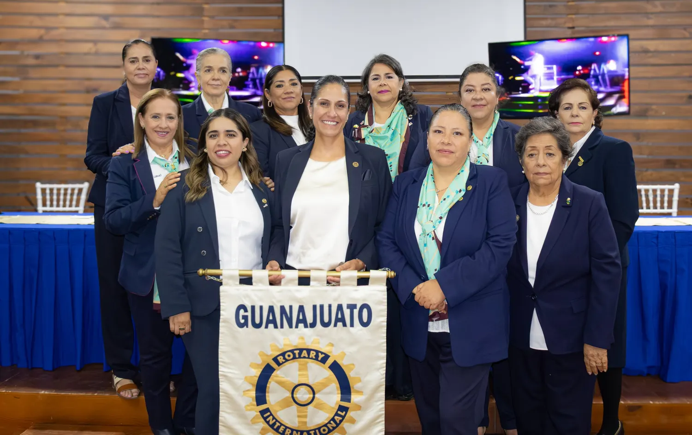

Servir para transformar
Impulsar el bienestar de las familias de Guanajuato a través de proyectos de servicio sostenibles, sumando el liderazgo, la amistad y los recursos de nuestras socias y de la red rotaria.
Rotary International · Distrito Guanajuato
Somos el Club Rotario Satélite Galereñas: una red de mujeres que ponen su tiempo, su talento y sus recursos al servicio de la comunidad. Unimos la tradición de más de un siglo de Rotary con una forma moderna y cercana de servir.
“Una red de personas comprometidas con mejorar Guanajuato.”
Los valores rotarios de siempre, con proyectos y comunicación de hoy.
Acciones concretas en colonias, escuelas y comunidades de Guanajuato.
Cada proyecto tiene nombre y rostro: el de nuestras socias.
Celebramos los logros de nuestras socias y de quienes sirven a la ciudad.
Quiénes somos
El Club Rotario Satélite Galereñas nació de la convicción de un grupo de mujeres de Guanajuato: que el servicio organizado puede cambiar la vida de su comunidad. Como club satélite, formamos parte de la red de Rotary International y trabajamos con la flexibilidad de un grupo cercano, ágil y comprometido.
Nuestro nombre honra a las galereñas, las mujeres de esta ciudad de túneles, callejones y tradición minera. Desde aquí servimos en salud, educación, apoyo a familias y cuidado del entorno.
Pertenecemos a una organización con más de un siglo de historia y 1,2 millones de socios en más de 200 países y regiones, que se unen para resolver problemas y atender las necesidades de su comunidad.
 Nuestras socias
Nuestras socias
Impulsar el bienestar de las familias de Guanajuato a través de proyectos de servicio sostenibles, sumando el liderazgo, la amistad y los recursos de nuestras socias y de la red rotaria.
Ser un club de referencia en el estado por el impacto medible de sus proyectos y por formar mujeres líderes comprometidas con su comunidad.
Ser rotaria
Periodo rotario 2026–2027
“Queremos que cada proyecto tenga un rostro y un resultado. Invitamos a más mujeres de Guanajuato a servir con nosotras.”
Gaby, como la conocen sus compañeras, encabeza el periodo 2026–2027 del Club Rotario Satélite Galereñas. Es una socia de trabajo en campo: participa de forma directa en las actividades del club, como la entrega de 1,2 toneladas de alimento al Banco de Alimentos, y representa a las Galereñas en los eventos de la familia rotaria de Guanajuato.

Los cargos y nombres de la mesa directiva son de ejemplo. Sustitúyelos por los de cada integrante y agrega una tarjeta por cada cargo.
Proyectos e impacto social
Nuestros proyectos siguen las áreas de interés de Rotary International y se enfocan en las necesidades reales de Guanajuato.
 Proyecto insignia
Proyecto insigniaJunto con la familia rotaria de Guanajuato reunimos y entregamos costales de arroz y productos básicos al Banco de Alimentos, para llegar a las familias de la ciudad que más lo necesitan.
Paquetes escolares, becas y círculos de lectura en escuelas públicas de la ciudad.
Resultado: [número] estudiantes beneficiados
Filtros y captación de agua de lluvia para escuelas y familias de comunidades rurales del municipio.
Resultado: [número] familias con agua segura
Reforestación en la sierra y en presas de la ciudad, con jóvenes de Interact y Rotaract.
Resultado: [número] árboles plantados
Talleres de finanzas, ventas digitales y mentoría para artesanas y emprendedoras guanajuatenses.
Resultado: [número] emprendedoras capacitadas
Cifras de Rotary International, según rotary.org.
Nuestras socias
Profesionistas, empresarias, servidoras públicas y madres de familia que comparten una misma vocación: servir a Guanajuato.
[Una frase sobre por qué sirve en Rotary o sobre el proyecto que coordina.]
[Una frase sobre por qué sirve en Rotary o sobre el proyecto que coordina.]
Cada socia que desee participar puede enviar una foto, su profesión y una frase sobre por qué sirve en Rotary.
Buscamos mujeres de Guanajuato con ganas de aportar su talento. También recibimos aliados, donantes y voluntarios.
Contacto
Escríbenos para colaborar en un proyecto, integrarte al club o invitarnos a tu comunidad.